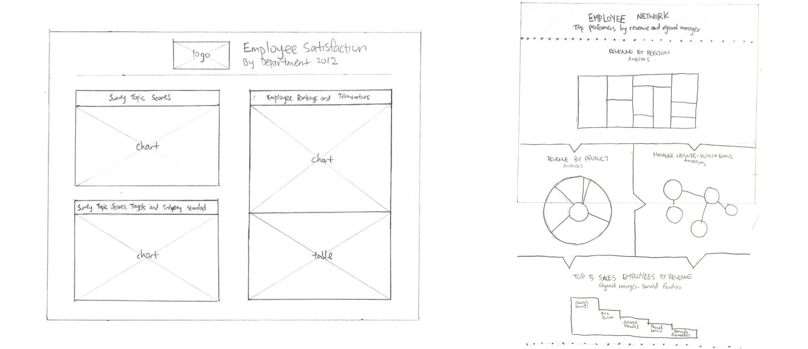
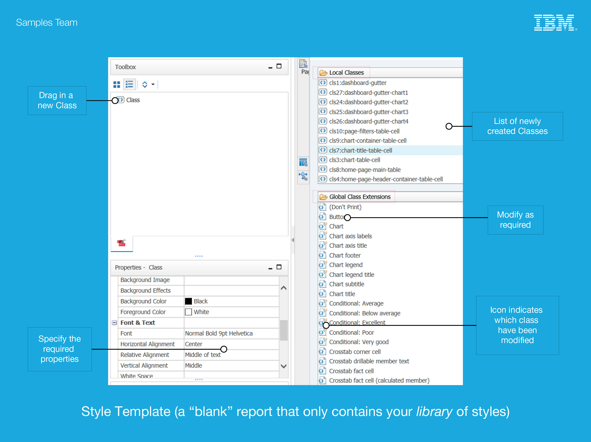
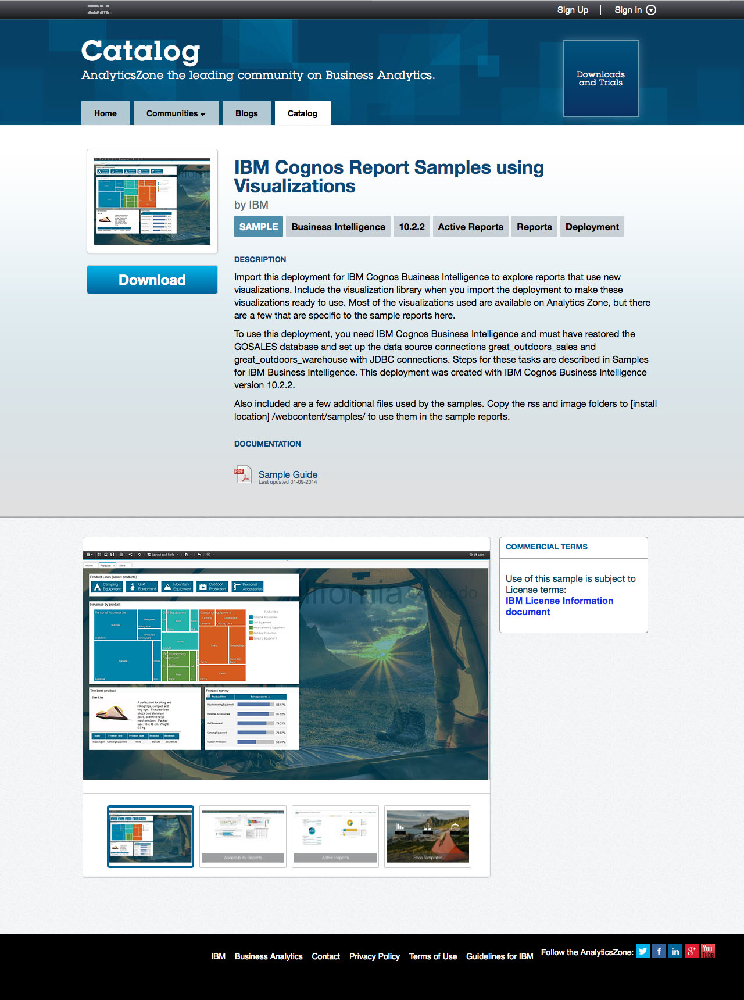

REPORT SAMPLES
enhancing visual analytics for businesses
TYPE
User Experience Design, User Interface Design, Visual Design
ROLE
User Experience Designer, User Interface Designer, Visual Designer
TOOLS
Adobe Illustrator, Adobe Photoshop, HTML5, CSS3, IBM Report Studio, IBM Cognos Workspace
Report Samples are a collection of visual analytics created as example documents for business owners to quickly jumpstart data visualization for their business metrics. As a User Experience Design and Visual Design intern for the IBM Business Analytics division, I mainly assisted the Samples Team to create and implement new concepts of report samples so that they are visually appealing and easy to use.

OBJECTIVE
With a new release of samples being accessible for the public community to download on IBM Analytics Zone, visuals and interactions had to be redesigned for all the reports.
To start the project, I first questioned the use case of each report sample in order to develop appropriate visual communications. The existing issue is that all the visual analytics are merged onto one page, which makes content difficult to read. I also had to research about the topic and IBM products to deepen my knowledge in the field. Next, sketches were done to get colleagues’ feedback.


Afterwards, mockups were polished in Adobe Illustrator and Photoshop. An iterative design cycle would follow until everything is agreed upon in terms of the visuals and user experience amongst the team, such as providing distinguishable sections rather than having a system that simply “spits out data” and lay it on a page. The ideas were then implemented in IBM Report Studio and IBM Cognos Workspace for customers to download the raw files and make modifications as necessary.
